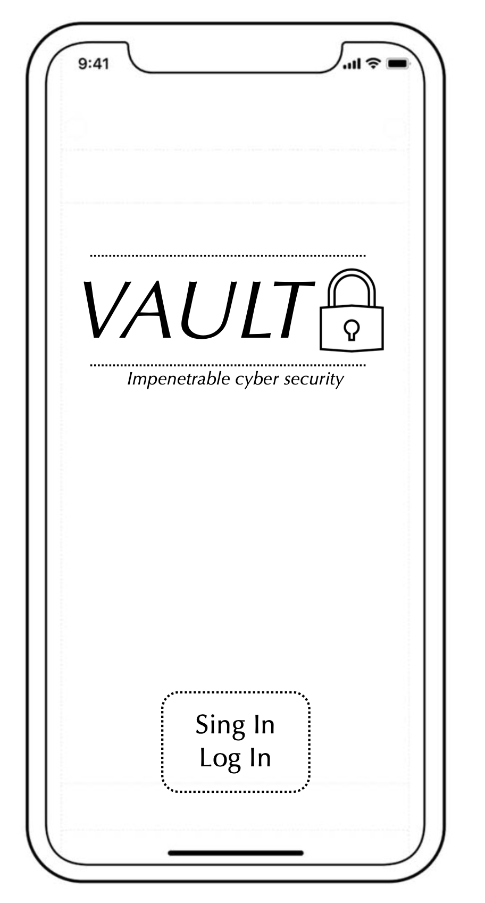

Problem Statement

There needs to be a software that protects social media accounts from getting hacked
Affinity Diagram

This affinity diagram goes over potentional problems and hurdles of implementing a solution to my problem.
Sketches

These sketches are meant to provide a genral idea of what the layout of the mobile version of my solution will look like.
Prototype

This prototype provides a demonstration of what my solution could possibly look like in real life.